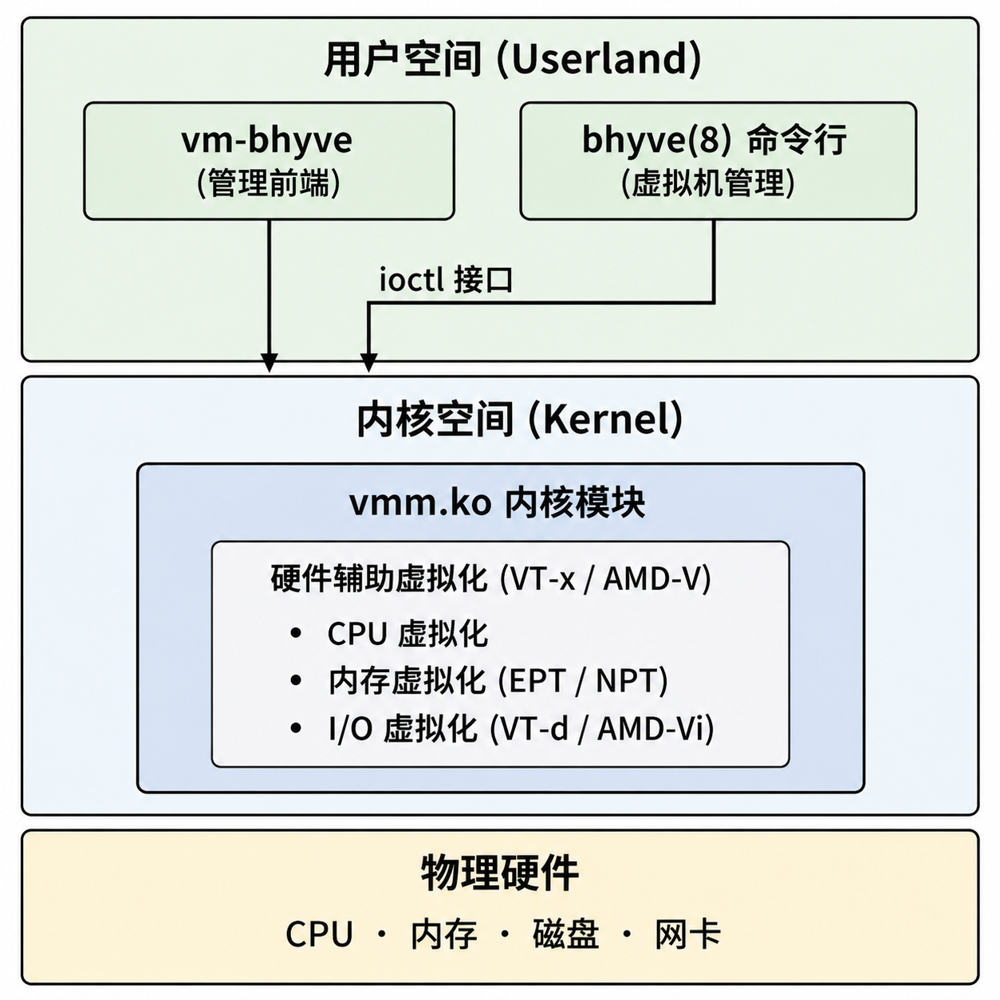

使用 bhyve 及 vm-bhyve 工具安装 Windows 11
Table of Contents
vm-bhyve 是 bhyve 的命令行管理工具，封装了 bhyve 底层命令，可简化虚拟机的配置管理
本节基于 FreeBSD 14.2-RELEASE 与 Windows 11 IoT Enterprise LTSC 涵盖 bhyve 虚拟机管理工具的安装、环境配置与系统镜像准备
bhyve 虚拟化架构层次如下图所示：

准备 Windows 镜像
Windows 11 IoT Enterprise LTSC，版本 24H2 (x64) - DVD (英文)
IoT 版本将可信平台模块（TPM）列为可选要求，内存大小等安装限制也较为宽松，降低了部署门槛 SHA-256 校验和：4F59662A96FC1DA48C1B415D6C369D08AF55DDD64E8F1C84E0166D9E50405D7A 磁力链接：magnet:?xt=urn:btih:7352bd2db48c3381dffa783763dc75aa4a6f1cff&dn=en-us_windows_11_iot_enterprise_ltsc_2024_x64_dvd_f6b14814.iso&xl=5144817664
加载内核模块
首先需要加载虚拟机管理相关的内核模块。 vmm 是 FreeBSD 内核提供的虚拟机监控程序 ，为 bhyve 提供硬件辅助虚拟化支持。该模块只需加载一次，之后 vm-bhyve 会自动管理
$ kldload vmm # 加载 FreeBSD 虚拟机管理模块（vmm）
系统重启后无需手动加载，vm-bhyve 会自动加载该模块
查看已加载的 vmm 相关内核模块。其中 vmm.ko 为 bhyve 虚拟机监控程序模块
$ kldstat | grep vmm 7 1 0xffffffff83320000 44b0 vmmemctl.ko 10 1 0xffffffff83400000 33e438 vmm.ko
注意：vmmemctl.ko 为 VMware 内存气球驱动，与 bhyve 无关
安装 vm-bhyve 相关软件
接下来安装 统一可扩展固件接口 UEFI 固件、虚拟网络计算 VNC 客户端与 vm-bhyve 管理工具。UEFI 固件为虚拟机提供现代启动支持，VNC 客户端用于访问虚拟机图形界面。
pkg:
$ pkg install bhyve-firmware vm-bhyve tigervnc-viewer
ports:
# 安装 bhyve 固件 $ cd /usr/ports/sysutils/bhyve-firmware && make install clean # 安装 vm-bhyve 管理工具 $ cd /usr/ports/sysutils/vm-bhyve && make install clean # 安装 TigerVNC Viewer $ cd /usr/ports/net/tigervnc-viewer && make install clean
配置 vm-bhyve
编辑 /etc/rc.conf 文件，启用 vm 服务并指定虚拟机存放目录：
# 启用 vm-bhyve 服务 vm_enable="YES" # 指定虚拟机存放目录，后续操作均使用此路径 vm_dir="/home/ykla/vm"
本节示例中出现的 /home/ykla 为示例路径，请根据自身环境替换为实际用户主目录
创建模板路径：
$ mkdir -p /home/ykla/vm/.templates
复制模板到虚拟机模板位置：
$ cp /usr/local/share/examples/vm-bhyve/* /home/ykla/vm/.templates
随后配置虚拟网络:
- public: 是模板指定的虚拟交换机名称
ue0 :为当前宿主机的物理网络接口名称
请根据实际网卡修改（可通过 ifconfig 命令查看）
虚拟交换机借助 bridge(4) 完成 网络桥接 ，将虚拟机网络栈与宿主机物理网络接口相连，使虚拟机可直接访问物理网络
物理网络 │ ▼ 物理网卡 ue0 │ │ bridge(4) 桥接 ▼ 虚拟交换机 vm-public │ ├── tap0 ──► 虚拟机 winguest │ └── tapN ──► 其他虚拟机
# 创建虚拟交换机 public $ vm switch create public # 将物理网卡 ue0 添加到 public 虚拟交换机 $ vm switch add public ue0
创建后查看新增的 vm-public ：
$ ifconfig ………省略一部分…… vm-public: flags=1008843<UP,BROADCAST,RUNNING,SIMPLEX,MULTICAST,LOWER_UP> metric 0 mtu 1500 options=0 ether 62:bc:e8:9f:f7:e1 id 00:00:00:00:00:00 priority 32768 hellotime 2 fwddelay 15 maxage 20 holdcnt 6 proto rstp maxaddr 2000 timeout 1200 root id 00:00:00:00:00:00 priority 32768 ifcost 0 port 0 member: ue0 flags=143<LEARNING,DISCOVER,AUTOEDGE,AUTOPTP> ifmaxaddr 0 port 3 priority 128 path cost 20000 groups: bridge vm-switch viid-4c918@ nd6 options=9<PERFORMNUD,IFDISABLED>
如创建错误，可使用以下命令删除该虚拟交换机：
$ vm switch destroy public
查看分配的虚拟交换机：
$ vm switch list NAME TYPE IFACE ADDRESS PRIVATE MTU VLAN PORTS public standard vm-public - no - - ue0
在 FreeBSD 13.0 及以上版本的宿主机中使用 xHCI 鼠标，需启用 USB HID 子系统，请在 /boot/loader.conf 文件中添加：
# 启用 USB HID 支持 hw.usb.usbhid.enable="1" # 开机自动加载 usbhid 内核模块 usbhid_load="YES"
相关文件结构：
/
├── boot/
│ └── loader.conf # 内核模块加载配置
├── etc/
│ └── rc.conf # 系统启动配置
├── home/
│ └── ykla/
│ ├── vm/ # 虚拟机存放目录
│ │ ├── .templates/ # 虚拟机模板目录
│ │ └── winguest/
│ │ ├── winguest.conf # 虚拟机配置文件
│ │ └── disk0.img # 虚拟机磁盘镜像
│ └── en-us_windows_11_iot_enterprise_ltsc_2024_x64_dvd_f6b14814.iso # Windows ISO 镜像
└── usr/
├── local/
│ └── share/
│ └── examples/
│ └── vm-bhyve/ # vm-bhyve 示例文件
└── ports/
├── sysutils/
│ ├── bhyve-firmware/ # bhyve 固件 Ports 目录
│ └── vm-bhyve/ # vm-bhyve Ports 目录
└── net/
└── tigervnc-viewer/ # TigerVNC Viewer Ports 目录
配置虚拟机模板
虚拟机模板是创建虚拟机的基础配置文件。以下演示如何创建并配置 Windows 虚拟机模板
如运行的是 Windows 10 之前的版本，或在 Windows 系统上安装 Microsoft SQL Server 时 需要使用参数 disk0_opts="sectorsize=512" 将磁盘扇区大小设置为 512
根据模板创建 Windows 虚拟机，磁盘占用 40 GB：
$ vm create -t windows -s 40G winguest
销毁虚拟机的命令：
$ vm destroy winguest Are you sure you want to completely remove this virtual machine (y/n)? # 输入 y 并按回车键即可删除
默认模板存在问题，需要修改。配置文件路径为 /home/ykla/vm/winguest/winguest.conf ：
# 设置虚拟机使用 UEFI 启动，不支持 UEFI 的 Windows 无法启动（如 Windows XP），Windows 7 64 位版本支持 UEFI loader="uefi" # 启用图形界面，虚拟机启动时暂停，直到 VNC 客户端连接 graphics="yes" # 启用 USB 3.0 鼠标支持 xhci_mouse="yes" # 分配 CPU 数量，建议根据宿主机性能适当调整 cpu=2 # 分配内存大小 memory=4G # 默认情况下 bhyve 不启用 -H，虚拟机空闲时会占满宿主机 CPU（占用 100% 宿主机 CPU） # 如需启用 HLT 让出 CPU，可使用 bhyve_options 字段向 bhyve 传递 -H 参数 # bhyve_options="-H" # 客户机执行 HLT 时让出宿主机 CPU，可降低空闲虚拟机 CPU 占用 # cpu_hlt="yes" # 该选项并非 vm-bhyve 官方配置参数 # 限制单个 AHCI 控制器挂载的设备数量，避免添加磁盘后 PCI 插槽编号变化 # 导致 Windows 将网络设备识别为新网卡 ahci_device_limit="8" # 网络配置 # 建议改为 virtio-net 并在 guest 安装驱动，e1000 开箱即用 network0_type="e1000" network0_switch="public" # 磁盘配置 disk0_type="ahci-hd" disk0_name="disk0.img" # Windows 默认使用本地时间而非 UTC utctime="no" # VNC 显示分辨率 graphics_res="1920x1080" # 虚拟机唯一标识符 uuid="af86e094-56da-11ed-958f-208984999cc9" # 网络 MAC 地址 network0_mac="58:9c:fc:0c:5e:bb"
旧版 FreeBSD 中（FreeBSD 14.0 以前），/home/ 是 /usr/home/ 的软链接，两者相同 自 FreeBSD 14 以降，不再使用软链接，而是直接使用 /home/ 目录
安装 Windows 系统
安装模式下，vm-bhyve 将等待 VNC 客户端连接后才启动虚拟机，以捕捉 Windows 可能弹出的“Press any key to boot from a CD/DVD”提示。此时 vm list 中可看到虚拟机显示为锁定状态：
$ vm install winguest /home/ykla/en-us_windows_11_iot_enterprise_ltsc_2024_x64_dvd_f6b14814.iso # 请替换为实际路径 Starting winguest * found guest in /home/ykla/vm/winguest * booting...
虚拟机启动后，需以 VNC 客户端连接才能完成系统安装
终止虚拟机：优先使用 vm stop 命令向虚拟机发送 ACPI 关机信号，实现关闭。如果虚拟机阻碍宿主机关机，可在 tty 中按 Ctrl+C 跳过等待并强制关机
$ vm list NAME DATASTORE LOADER CPU MEMORY VNC AUTO STATE winguest default uefi 2 4G 0.0.0.0:5900 No Running (2072) $ vm stop winguest Sending ACPI shutdown to winguest
如 vm stop 无效，使用 SIGTERM 信号：
$ ps -el | grep bhyve UID PID PPID C PRI NI VSZ RSS MWCHAN STAT TT TIME COMMAND 0 1858 1 1 68 0 16388 4 wait IW 3 0:00.00 () /bin/sh /usr/local/sbin/vm _run winguest /home/ykla/zh-cn_windows_11_business_editions_version_24h2_x64_dvd $ kill 1858
等待约 10-30 秒后确认进程已退出，再运行 bhyvectl –destroy –vm=winguest 清理
仅在 SIGTERM 多次尝试仍无效时，方可使用 kill -9 作为最后手段 警告：可能导致虚拟机磁盘数据损坏
故障排除与未竟事宜
如遇问题，请先重启宿主机；如果问题仍然存在，可借助 ifconfig 检查并删除多余网卡
如果虚拟机长时间保持 stopped 状态，请检查网络配置
查看网络配置（虚拟机关闭状态）：
$ ifconfig alc0: flags=8802<BROADCAST,SIMPLEX,MULTICAST> metric 0 mtu 1500 options=c319a<TXCSUM,VLAN_MTU,VLAN_HWTAGGING,VLAN_HWCSUM,TSO4,WOL_MCAST,WOL_MAGIC,VLAN_HWTSO,LINKSTATE> ether 20:89:82:94:7c:c9 media: Ethernet autoselect nd6 options=29<PERFORMNUD,IFDISABLED,AUTO_LINKLOCAL> lo0: flags=8049<UP,LOOPBACK,RUNNING,MULTICAST> metric 0 mtu 16384 options=680003<RXCSUM,TXCSUM,LINKSTATE,RXCSUM_IPV6,TXCSUM_IPV6> inet6 ::1 prefixlen 128 inet6 fe80::1%lo0 prefixlen 64 scopeid 0x2 inet 127.0.0.1 netmask 0xff000000 groups: lo nd6 options=21<PERFORMNUD,AUTO_LINKLOCAL> ue0: flags=8943<UP,BROADCAST,RUNNING,PROMISC,SIMPLEX,MULTICAST> metric 0 mtu 1500 options=8000b<RXCSUM,TXCSUM,VLAN_MTU,LINKSTATE> ether f8:e2:3b:3f:ea:4c inet 192.168.31.169 netmask 0xffffff00 broadcast 192.168.31.255 media: Ethernet autoselect (1000baseT <full-duplex>) status: active nd6 options=29<PERFORMNUD,IFDISABLED,AUTO_LINKLOCAL> vm-public: flags=8843<UP,BROADCAST,RUNNING,SIMPLEX,MULTICAST> metric 0 mtu 1500 ether 3a:e1:fa:98:33:b4 id 00:00:00:00:00:00 priority 32768 hellotime 2 fwddelay 15 maxage 20 holdcnt 6 proto rstp maxaddr 2000 timeout 1200 root id 00:00:00:00:00:00 priority 32768 ifcost 0 port 0 member: ue0 flags=143<LEARNING,DISCOVER,AUTOEDGE,AUTOPTP> ifmaxaddr 0 port 3 priority 128 path cost 20000 groups: bridge vm-switch viid-4c918@ nd6 options=9<PERFORMNUD,IFDISABLED>
查看网络配置（虚拟机开启状态），此时会多出一个网络接口 tap0：
tap0: flags=8943<UP,BROADCAST,RUNNING,PROMISC,SIMPLEX,MULTICAST> metric 0 mtu 1500 description: vmnet/winguest/0/public options=80000<LINKSTATE> ether 58:9c:fc:10:ff:d6 groups: tap vm-port media: Ethernet autoselect status: active nd6 options=29<PERFORMNUD,IFDISABLED,AUTO_LINKLOCAL> Opened by PID 2519
可选配置
以下为额外的虚拟机管理命令：
查看所有虚拟机状态：
$ vm list NAME DATASTORE LOADER CPU MEMORY VNC AUTO STATE winguest default uefi 2 4G - No Stopped
查看指定的虚拟机状态：
$ vm info winguest ------------------------ Virtual Machine: winguest ------------------------ state: stopped datastore: default loader: uefi uuid: af86e094-56da-11ed-958f-208984999cc9 cpu: 2 memory: 4G network-interface number: 0 emulation: e1000 virtual-switch: public fixed-mac-address: 58:9c:fc:0c:5e:bb fixed-device: - virtual-disk number: 0 device-type: file emulation: ahci-hd options: - system-path: /home/ykla/vm/winguest/disk0.img bytes-size: 42949672960 (40.000G) bytes-used: 23557898240 (21.940G)
| Next: BVCP | Home: 虚拟化和容器管理 |